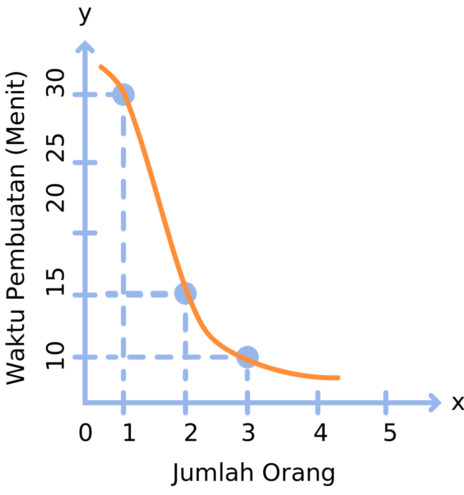
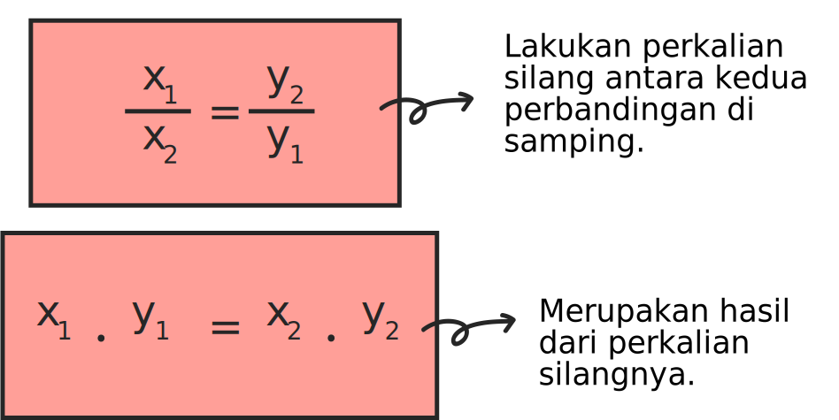

Hampir segala sesuatu jika dikerjakan bersama-sama pasti akan lebih mudah. Termasuk dalam hal membantu ibumu di rumah dalam membuat kue. Jika ibumu mengerjakannya sendiri, kemungkinan proses pembuatan kuenya akan sedikit lebih lambat, namun jika kamu membantu beliau, maka proses pembuatan kue tersebut akan lebih cepat.
Nah, ilustrasi di atas merupakan gambaran sederhana dari perbandingan berbalik nilai. Perbandingan antara banyaknya orang dan waktu yang dibutuhkan dalam proses membuat kue. Dalam perbandingan berbalik nilai, jika nilai di awal semakin besar, maka nilai di akhir akan menjadi semakin kecil, dan begitupun sebaliknya. Atau dalam pengertian lainnya, perbandingan berbalik nilai merupakan perbandingan antara dua besaran yang mana jika nilai pada variabel pertamanya bertambah, maka nilai pada variabel keduanya akan berkurang dan berlaku sebaliknya. Berikut adalah bentuk persamaannya:
Selain perbandingan senilai, perbandingan berbalik nilai juga mempunyai 3 cara dalam menyatakan perbandingannya, yaitu: menggunakan tabel, menggunakan grafik dan menggunakan persamaan. Penjelasan selengkapnya, yuk baca lagi pada bagian di bawah ini!
1. Perbandingan Berbalik Nilai dalam Bentuk Tabel
Cara menyajikan perbandingan berbalik nilai dalam bentuk tabel tidak jauh berbeda dengan perbandingan senilai. Agar lebih terbayang, kita ambil kasus dari ilustrasi sebelumnya untuk dicari tahu penyelesainnya dalam bentuk tabel. Perbandingan berbalik nilai antara banyaknya orang dalam membuat kue dan waktu yang dibutuhkan dalam proses membuat kue.
Kita buat anggapan bahwa jika hanya ibu (satu orang) yang membuat kue, maka ia membutuhkan waktu 30 menit dalam proses menyelesaikannya. Lalu, jika ibu mendapat bantuan darimu (dua orang), maka kalian membutuhkan waktu yang dua kali lebih cepat dari sebelumnya yaitu 15 menit. Jika ibu mendapat bantuan darimu dan adikmu (tiga orang), maka kalian hanya membutuhkan waktu 10 menit untuk menyelesaikannya atau bisa dikatakan proses pembuatannya tiga kali lebih cepat dari sebelumnya. Berikut adalah tabel yang bisa kita sajikan untuk perbandingan tersebut:
Jumlah Orang
Waktu Pembuatan
1
30
2
15
3
10
Dan berikut adalah proses perhitungan waktu pembuatan yang diperoleh:
Hasil Perolehan Waktu Pembuatan
30 : 1 = 30
30 : 2 = 15
30 : 3 = 10
2. Perbandingan Berbalik Nilai dalam Bentuk Grafik
Berikut ini adalah tahapan dalam membuat perbandingan senilai dalam bentuk grafik:
Untuk memudahkan kalian, terlebih dahulu buatlah tabel perbandingan berbalik nilainya.
Selanjutnya, setelah membuat tabel perbandingan, buatlah grafik kartesius. Menggunakan sumbu x dan sumbu y. Lalu, masukkan data yang sudah didapatkan pada tabel sebelumnya.
Buatlah pasangan titik koordinatnya berdasarkan data pada tabel. Lalu hubungkan kedua titiknya menggunakan garis putus-putus.
Setelah itu, tariklah garis di setiap titik pertemuan koordinatnya. Biasanya, hasil dari grafik perbandingan berbalik nilai berbentuk kurva yang melengkung. Berikut ini adalah gambaran dari grafik perbandingan berbalik nilai :
 3. Perbandingan Berbalik Nilai dalam Bentuk Persamaan
Perbandingan senilai dalam bentuk persamaan dapat dinyatakan dalam bentuk berikut:
$$\frac{x_1}{x_2}=\frac{y_2}{y_1}$$
Jika disederhanakan, maka akan menjadi seperti ini:

Agar kamu bisa lebih memahami materi di atas, ayo perhatikan contoh soal pada bagian "Contoh Soal". Untuk melanjutkan pada bagian "Contoh Soal", silakan klik halaman atau tombol .